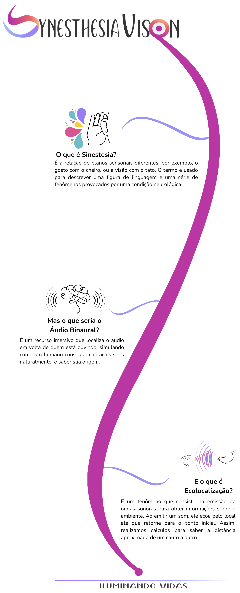

Pensando nessa situação, os
Óculos Sensoriais para Cegos - Synesthesia Vision
buscam proporcionar ao cego autonomia e segurança no seu deslocamento, através do desenvolvimento de uma tecnologia, que é complementar às bengalas, tornando assim sua experiência de vida mais independente e confortável.
A bengala é a tecnologia assistiva mais utilizada pelos cegos por ser segura, barata e também sinalizadora da cegueira. Porém...
Ela tem uma limitação:
Não conseguir localizar obstáculos acima da linha
da cintura.

Diante de tudo isso buscamos investigar o uso da ecolocalização e do som binaural como princípios para o desenvolvimento de óculos sensoriais que possibilitem uma espécie de visão sinestésica do mundo, ou seja, que permita que a audição seja os olhos de um cego.
Ecolocalização?
Som Binaural?
Sinestesia?
Nos acompanhe abaixo e entenda os conceitos que inspiraram o projeto!
Um histórico da Evolução do Projeto
Tivemos até então 3 fases.
Começando por Mark I.
Foi nossa prova de conceito!
Desenvolvido em meados de 2015 utilizando componentes eletrônicos baratos em uma sucata de óculos escuro. Os feedbacks dos cegos que testaram o nosso equipamento foram muito positivos.
Buscando aperfeiçoar caminhamos para o Mark II, em 2018.
Esse se tornou um protótipo que utilizava óculos impresso em impressora 3D, componentes eletrônicos mais precisos, um algoritmo de geração de som binaural muito melhor e um aplicativo que fornece informações complementares para o usuário.
De 2021 pra cá estamos com o Mark III
Seguindo com o aperfeiçoamento e com a proposta da produção comercial desse equipamento.
Esse utiliza placa de circuito impresso!
O que o torna muito mais leve, confortável e bonito por
eliminar a maior parte dos fios.
Conheça a Equipe Visionária por Trás dos Óculos
Coordenadores do Projeto
Bolsistas colaboradores do Projeto
Allamy
Estudante de ADS

Caroline
Estudante de ADS
Estevão
Estudante de Mecânica

Felipe
Estudante de Eletrônica

Isaque
Estudante de Eletrônica
Jailson
Estudante de Eletrônica
Michael
Estudante de ???
Ryan
Estudante de ???